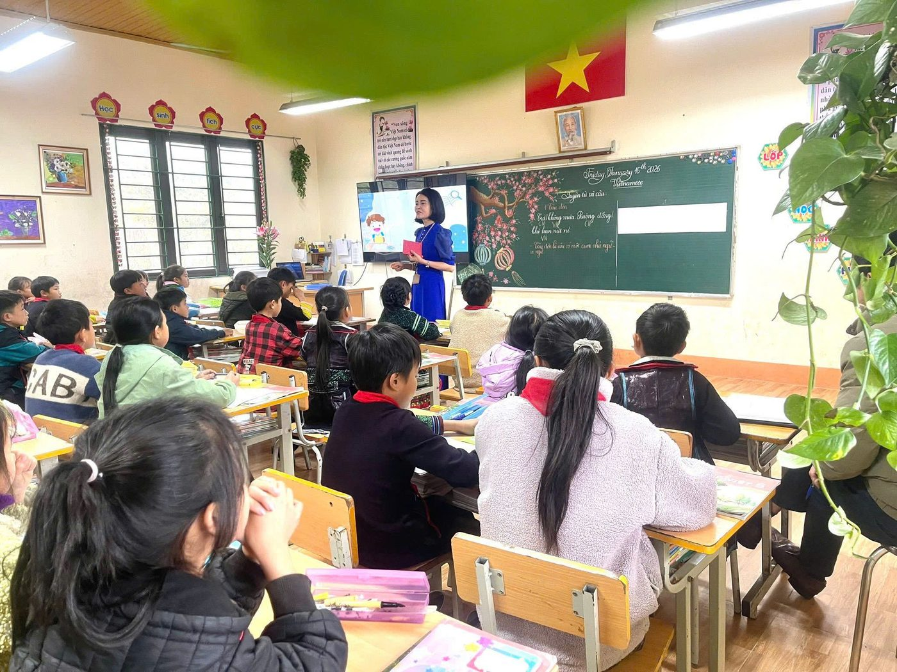
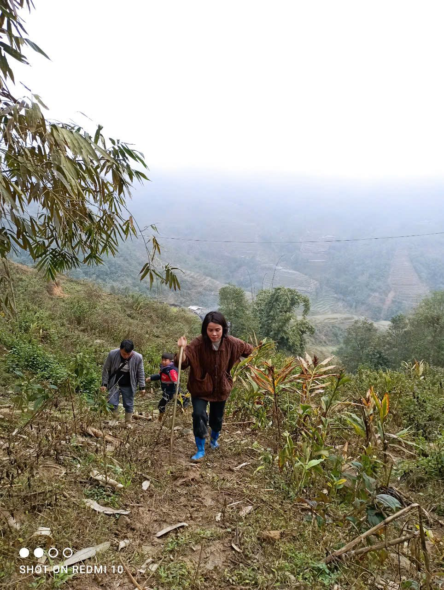
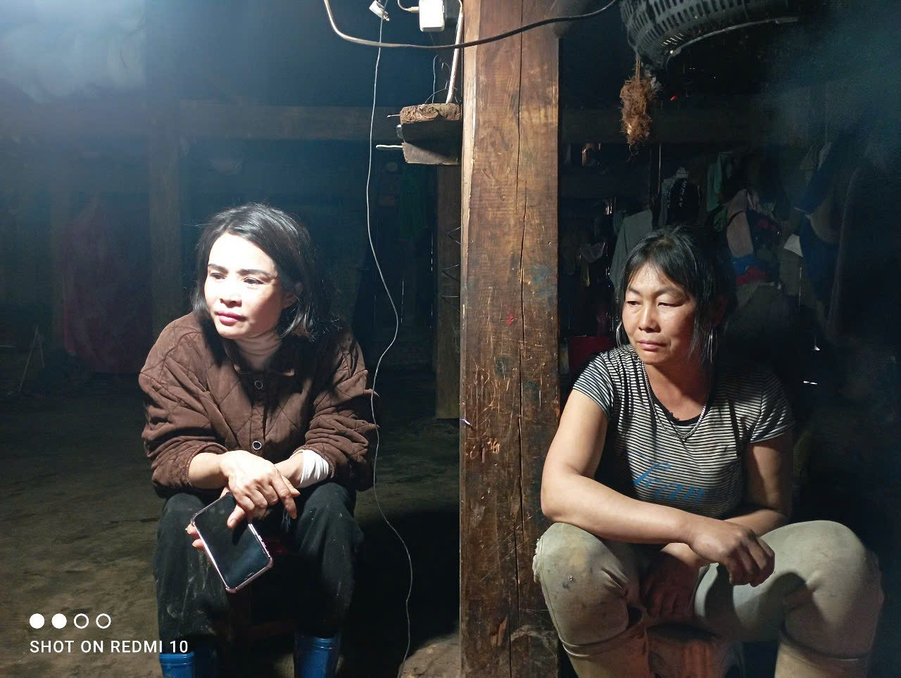
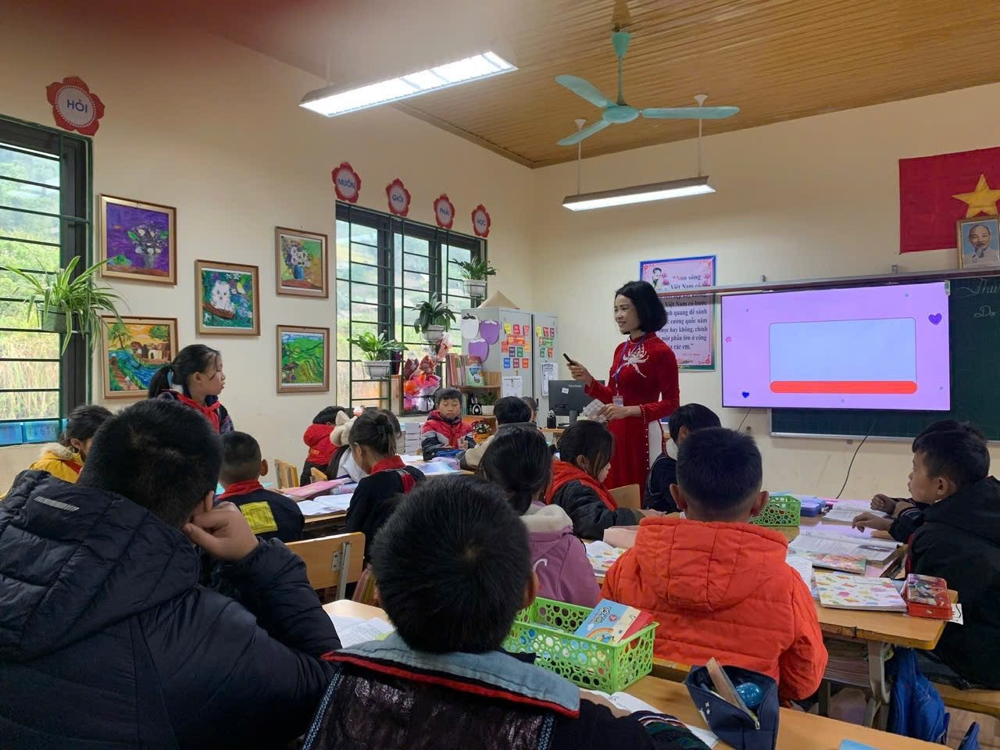
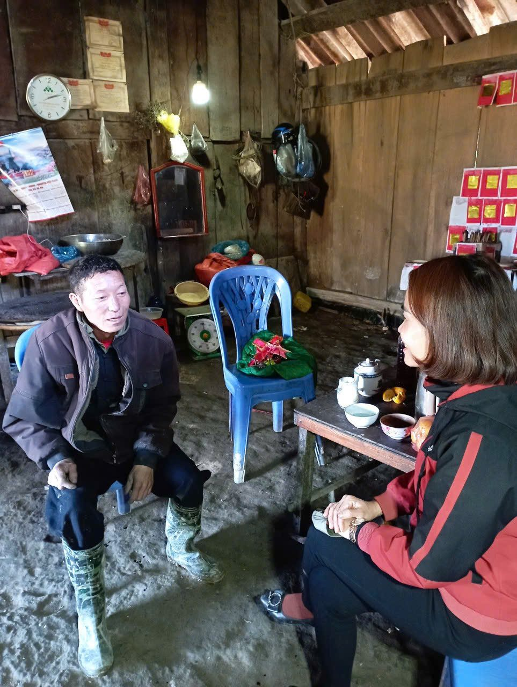
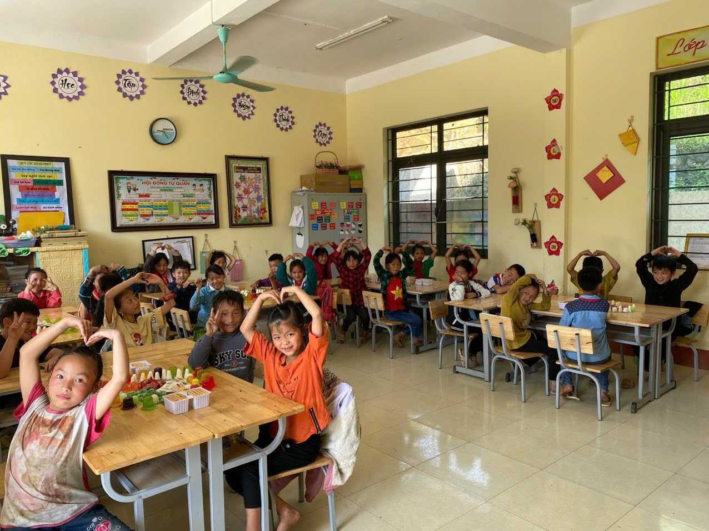
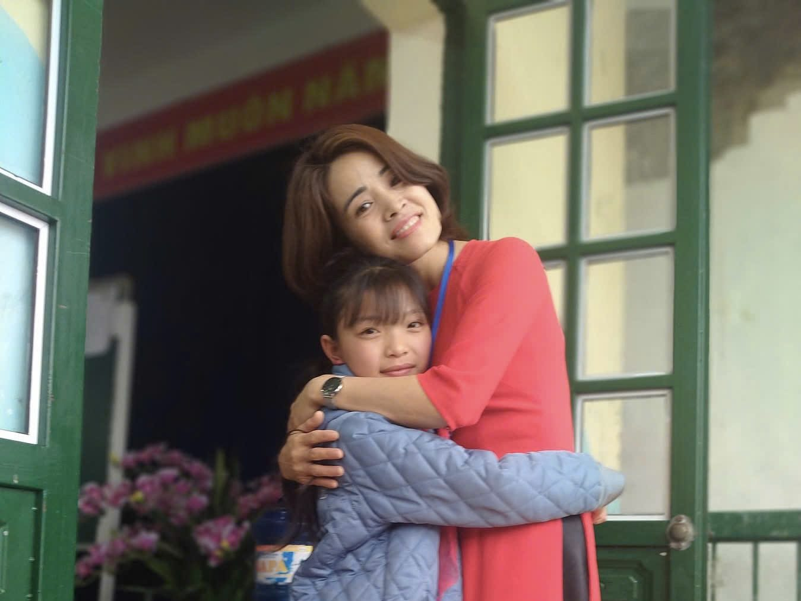
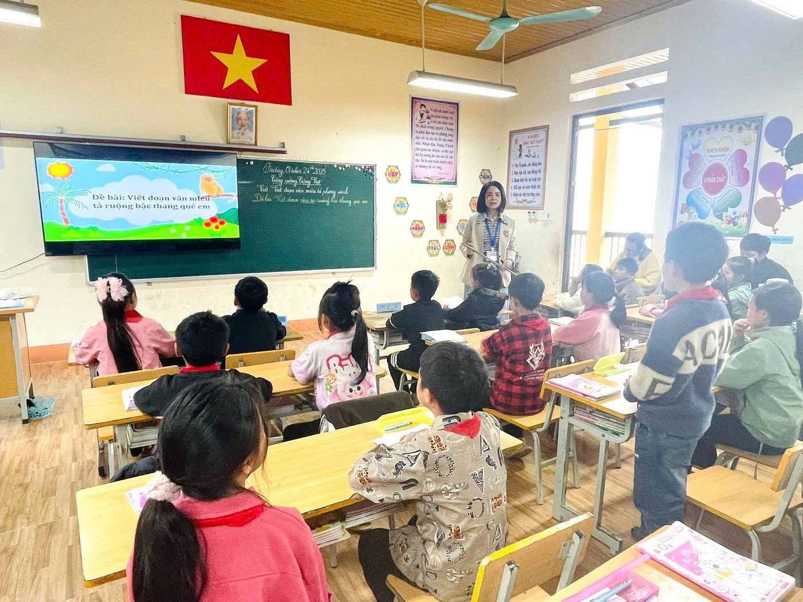

Ở vùng cao, vận động một học sinh đến lớp đôi khi không chỉ là một lời nhắc. Đó có thể là một cuộc đi đến tận nhà, một buổi ngồi bên gia đình, một câu chuyện được lắng nghe và sự kiên trì để cùng tìm ra cách tháo gỡ.

01Khi một chỗ ngồi trong lớp bất ngờ bỏ trống
Buổi sáng ở Trường PTDTBT Tiểu học Trung Chải bắt đầu như thường lệ. Nhưng với giáo viên chủ nhiệm, đôi khi điều khiến người ta chú ý nhất lại là một chỗ ngồi còn trống.
Sáng hôm ấy, trong lớp 5A2, chỗ ngồi của Má Thị Lan lại bỏ trống.
Lan là một học sinh không phải lúc nào cũng học tập thuận lợi. Gia đình còn nhiều khó khăn, việc học của em đôi khi phải nhường chỗ cho những công việc của gia đình. Những ngày đầu, em nghỉ một vài buổi. Rồi số buổi nghỉ nhiều hơn.
Cô giáo Trần Thị Tuyết bắt đầu để ý.
Cô không muốn nhìn sự việc đơn giản là “một học sinh nghỉ học”. Cô nghĩ phía sau một chỗ ngồi bỏ trống chắc chắn phải có một câu chuyện.
Và cô quyết định tìm hiểu.
02Từ cổng trường đến căn nhà của học sinh

Qua trao đổi với bạn bè và tìm hiểu thêm tình hình của học sinh, cô Tuyết biết Lan nghỉ học không phải vì em không muốn học. Gia đình còn khó khăn, em có lúc phải phụ giúp việc nhà, trong khi việc học chưa thực sự được gia đình đặt lên vị trí ưu tiên. Nếu chỉ nhắc nhở Lan: “Em phải đi học đầy đủ”, có lẽ chưa giải quyết được vấn đề.
Cô Tuyết hiểu rằng muốn Lan trở lại lớp và duy trì việc học, trước hết phải nói chuyện với gia đình.
Cô quyết định đến tận nhà.
03“Dân vận” bắt đầu từ sự chân thành

Lần đầu đến nhà, cô Tuyết không bắt đầu câu chuyện bằng việc hỏi vì sao Lan nghỉ học.
Cô hỏi thăm cuộc sống của gia đình, công việc của bố mẹ, việc sinh hoạt của các con rồi mới nhẹ nhàng nói về chuyện học của Lan.
Anh Má A Chờ ban đầu cũng có những điều khó nói. Gia đình còn nhiều việc phải lo, trong suy nghĩ của người lớn, một đứa trẻ ở nhà phụ giúp gia đình đôi khi cũng là một việc cần thiết.
Cô Tuyết không phản bác ngay.
Cô ngồi lại, lắng nghe.
Rồi cô phân tích cho gia đình thấy rằng nếu Lan nghỉ học thường xuyên, kiến thức bị hổng, em sẽ ngày càng khó theo kịp các bạn. Quan trọng hơn, khi đã quen với việc nghỉ học, việc đưa em trở lại trường sẽ càng khó khăn.
Cuộc trò chuyện hôm ấy không làm mọi chuyện thay đổi ngay.
Nhưng ít nhất, gia đình đã bắt đầu lắng nghe nhà trường.
04Má Thị Lan trở lại trường

Sau lần gặp đầu tiên, Má Thị Lan trở lại trường.
Nhưng cô Tuyết không nghĩ rằng như vậy là đã xong.
Cô tiếp tục theo dõi việc học và sự chuyên cần của em. Một thời gian sau, cô lại đến gia đình để trao đổi.
Lần này, câu chuyện đã khác.
Không còn khoảng cách giữa “nhà trường” và “gia đình”. Anh Má A Chờ đã chủ động trao đổi về việc học của con, hỏi thêm giáo viên xem Lan học tập thế nào, còn yếu môn gì và gia đình có thể hỗ trợ con ra sao.
Hai lần đến nhà, nhưng điều cô Tuyết muốn tạo ra không phải là hai lần vận động. Đó là một mối quan hệ đồng hành lâu dài giữa gia đình và nhà trường.
05Một người cha và sự thay đổi trong suy nghĩ

Trước đây gia đình còn nghĩ con nghỉ vài buổi cũng không sao, nhưng cô giáo đến tận nhà nói chuyện, tôi mới thấy nếu để con nghỉ nhiều thì sau này con sẽ khó theo kịp các bạn.
Trong cuộc trò chuyện, cô Tuyết nhắc anh Chờ rằng Lan đã học đến lớp 5. Đây là giai đoạn quan trọng để em chuẩn bị chuyển cấp.
Cô nói với anh rằng nhà trường có thể hỗ trợ em trong học tập, giáo viên có thể quan tâm thêm khi em gặp khó khăn, nhưng điều quan trọng nhất vẫn là gia đình tạo điều kiện để em có thời gian đến lớp đều đặn.
Anh Chờ dần hiểu rằng việc cho con đi học không phải chỉ là đáp ứng yêu cầu của nhà trường.
Đó là trao cho con một cơ hội.
Một cơ hội để sau này con có thể tự lựa chọn con đường của mình.
06Lan trở lại học, từ một học sinh có nguy cơ nghỉ học trở thành một học sinh tiếp tục được đồng hành trên con đường đến trường

Sau những lần gặp gỡ, Lan trở lại lớp đều đặn hơn.
Nhưng điều cô Tuyết quan tâm không chỉ là việc em có mặt.
Cô bắt đầu chú ý đến những thay đổi nhỏ của Lan: em có chủ động tham gia các hoạt động trên lớp không, có mạnh dạn hỏi khi chưa hiểu bài không, có hoàn thành nhiệm vụ học tập không.
Khi em gặp khó khăn, cô động viên và hỗ trợ thêm.
Những thay đổi ấy không diễn ra trong một ngày.
Nhưng từng ngày, Lan dần lấy lại nhịp học tập.
07Lan chia sẻ: “Em thích đi học vì ở trường có cô giáo và các bạn. Cô Tuyết thường hỏi em có khó khăn gì thì nói với cô.”

Có lẽ với Lan, điều quan trọng nhất không phải là cô giáo đã đến nhà em bao nhiêu lần.
Điều em cảm nhận được là cô giáo không bỏ cuộc khi em gặp khó khăn.
Mỗi lần em nghỉ học, cô tìm hiểu. Khi gia đình có khó khăn, cô tìm cách chia sẻ. Khi em trở lại lớp, cô tiếp tục quan tâm.
Từ đó, Lan hiểu rằng việc học của mình được thầy cô và gia đình quan tâm thực sự.
Và khi một đứa trẻ cảm thấy mình được quan tâm, em sẽ có thêm động lực để cố gắng.
08Từ một chỗ ngồi bỏ trống đến một cách làm

Câu chuyện của Lan khiến cô Tuyết nhận ra một điều rất giản dị: Với học sinh vùng cao, muốn duy trì việc học cho các em, người giáo viên đôi khi phải đi xa hơn công việc trên bục giảng.
Cách làm được rút ra
Một lần học sinh nghỉ học
Tìm hiểu nguyên nhân.
Biết nguyên nhân
Không vội trách móc.
Gặp khó khăn
Tìm đến gia đình.
Gặp phụ huynh
Trước hết phải lắng nghe.
Sau khi học sinh trở lại trường
Tiếp tục đồng hành.
Từ một trường hợp cụ thể, cách làm ấy có thể trở thành kinh nghiệm để giáo viên trong trường cùng áp dụng đối với những học sinh có nguy cơ bỏ học, học sinh có hoàn cảnh khó khăn hoặc chưa nhận được sự đồng hành đầy đủ từ gia đình.
Hành trình
Từ một chỗ ngồi bỏ trống đến một cách làm
-
01Phát hiện Học sinh nghỉ học, giáo viên chủ động tìm hiểu.
-
02Tìm hiểu Không chỉ nhìn vào biểu hiện mà tìm nguyên nhân phía sau.
-
03Đến với gia đình Trực tiếp gặp phụ huynh, chia sẻ và lắng nghe.
-
04Cùng tìm giải pháp Nhà trường và gia đình thống nhất cách hỗ trợ học sinh.
-
05Đồng hành Tiếp tục quan tâm sau khi học sinh trở lại lớp.
-
06Thay đổi Học sinh duy trì việc học; phụ huynh nâng cao trách nhiệm đồng hành cùng con.
Ở xã Tả Phìn, tỉnh Lào Cai, những con đường đến trường có thể còn xa, cuộc sống của nhiều gia đình còn không ít khó khăn. Nhưng khoảng cách lớn nhất đôi khi không nằm ở những con đường, mà nằm ở việc người lớn có thực sự hiểu nhau hay không?
Cô giáo Trần Thị Tuyết đã chọn cách bước qua khoảng cách ấy bằng một việc rất giản dị “đến với gia đình học sinh”.
Hai lần đến nhà, một học sinh trở lại lớp, một người cha thay đổi cách nhìn về việc học của con. Nhưng giá trị lớn hơn của câu chuyện nằm ở chỗ: từ một trường hợp cụ thể, nhà trường có thêm một cách làm để chăm lo, vận động và đồng hành với học sinh.
“Dân vận khéo” không phải là những lời nói thật hay. Đó là khi người giáo viên biết đi đến nơi học sinh đang cần mình, biết lắng nghe trước khi vận động và kiên trì đồng hành sau khi vận động.
Một chỗ ngồi được giữ lại trong lớp học.
Một cánh cửa gia đình được mở ra.
Và phía sau đó là một niềm tin được gieo lại – niềm tin rằng mỗi đứa trẻ đều xứng đáng có cơ hội tiếp tục đến trường.